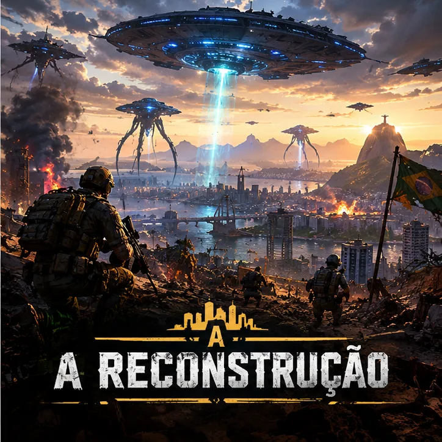

A Reconstrução
Campanha 3 · solo e offline · só abre depois de terminar o Anexo 7 e a Guerra Interestelar. O farol se apagou, a cura está no mundo. Agora é preciso limpar o que sobrou para que tudo volte ao normal.
Depois da guerra
Ninguém mais se infecta, mas os infectados que já existiam continuam andando. As equipes de reconstrução só podem entrar quando não restar nenhum. O Comando Interestelar (CIE) entrega a você os últimos setores.
As operações
Limpeza da Cidade
10 minutos e três ondas de zumbis na cidade-laboratório. A segunda onda sai quando cai a metade da primeira; a terceira, quando cai a metade do que estiver de pé. Todos mortos antes do tempo, você vence. Pela primeira vez em anos, as luzes das ruas acendem sozinhas.
Limpeza da Fazenda
A mesma ideia, agora com quatro ondas. O vento volta a cheirar a capim cortado.
Cristais Caídos
Fragmentos dos cristais lunares caíram na Serra Vermelha e ainda emitem o sinal do farol. Um avião do CIE leva você até lá: salte, pouse, aguarde 1 minuto de instruções e recolha os 5 cristais marcados no mapa, com zumbis por toda a serra. Com o quinto na mochila, o sinal morre para sempre.
Os Últimos Infectados
Na Colônia restam os últimos infectados que o farol chamou e a cura não alcançou. Você sozinho contra dois deles, armados: cada um que cair se levanta como zumbi no mesmo lugar, e é preciso derrubá-lo de novo. No rádio do CIE, uma única frase: "Reconstrução autorizada."
O fim
A Colônia fica em silêncio. Não há mais nenhum infectado, nenhum Rubro, nenhum sinal. As ruas, os campos e as casas finalmente são de quem ficou. Quem concluir a campanha ganha o personagem Combatente 7 · Legado, com o conjunto exclusivo de skins amarelas para todas as armas: o prêmio final do Modo História.